tonight's moon
Computed fresh every night. We never ask for your location.
What can you be with what you already have?
Tell us who’s dressing up, your vibe, and what’s already in your closet. We’ll rank 169 DIY costumes and show you what you can make, what you’re missing, and how to build it.
169 DIY builds · 2 minutes · no signup
Welcome back
Kept only on this device, nothing leaves your phone.
What can I make with what I already have?
Tick the clothes and supplies you already own. We rank all 169 builds by what you already cover, and what you would still need.
Basics like scissors, tape, and cardboard are already assumed.
Make it tonight
Start after dinner, done before bed. Drying time shown honestly.
Know what you want?
Search all 169 costumes directly.
Start with a classic
Three easy builds to get you going.
Kid favorites
The classics kids ask for every Halloween. Tap one to see the plan.
🌙 Bedtime stories
Short tales for the night before Halloween.
More ways to explore
Costume games
Guess who’s hiding, pair the pieces, or build a costume from a mystery basket.
Popular costumes
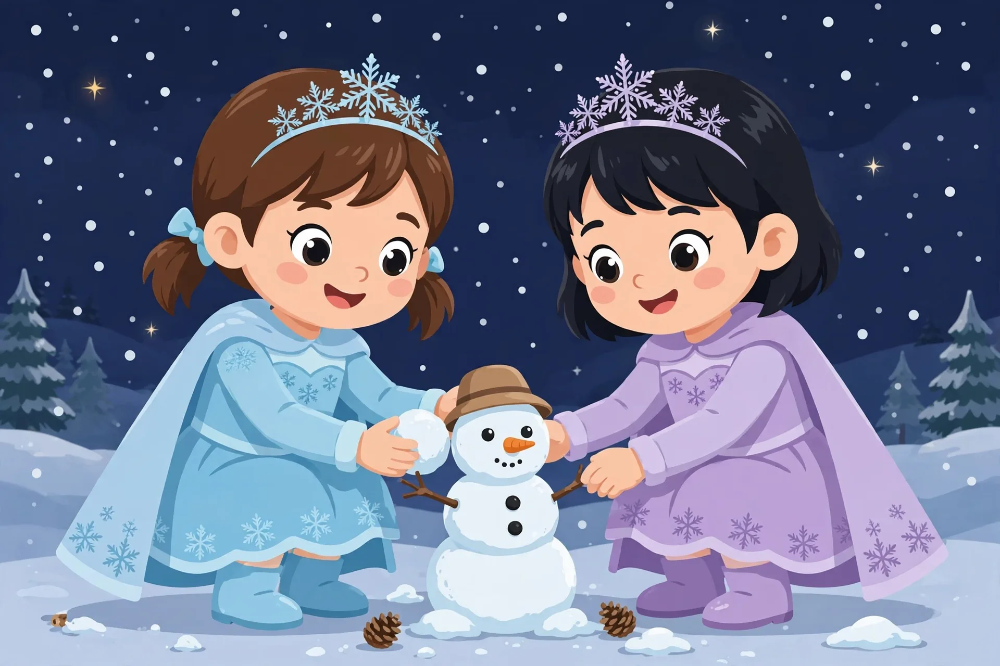
Ice Kingdom Crew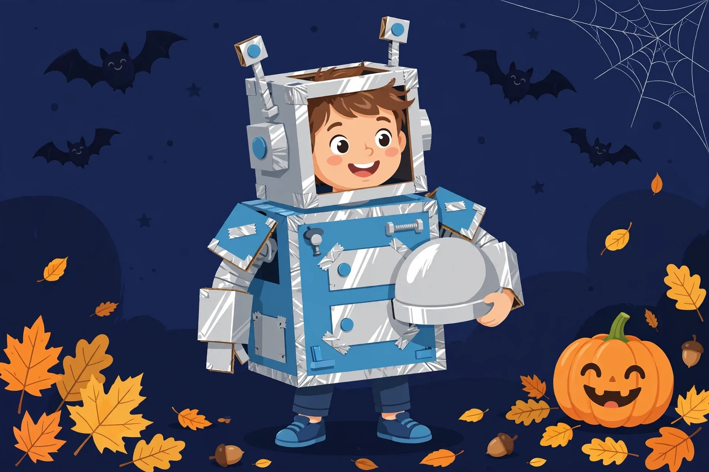
The Tin Hero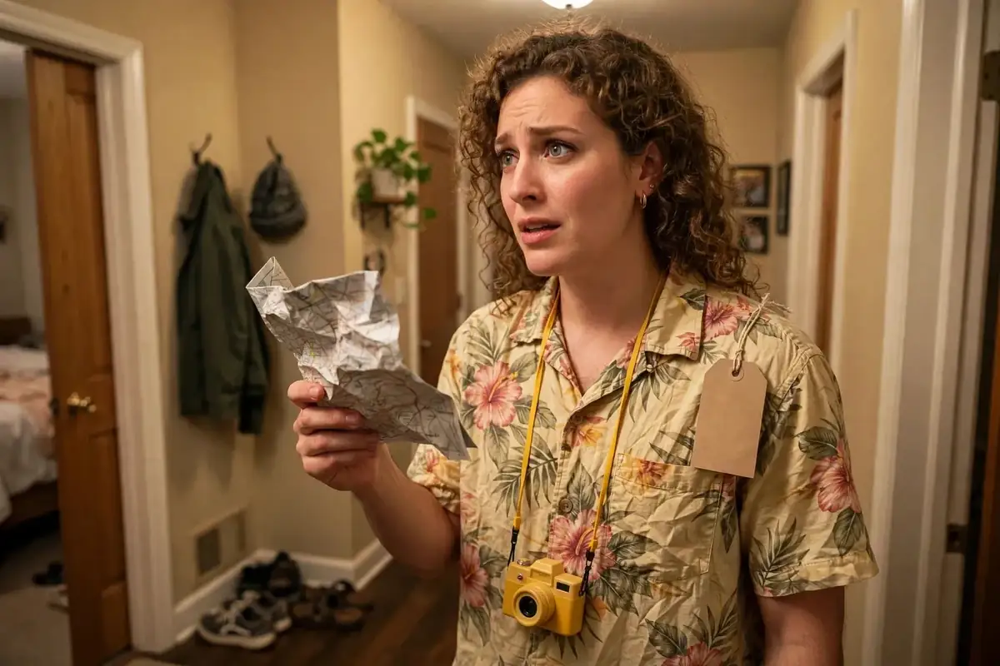
Lost Tourist Aussie Dog Family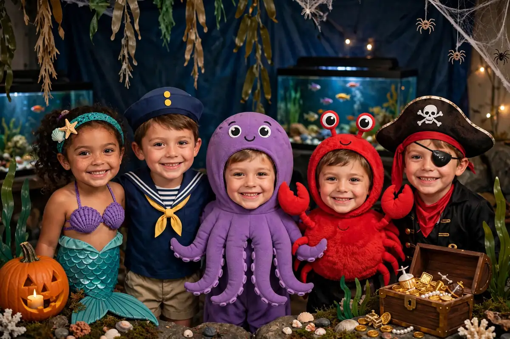
Mermaid Crew Ghost Hunters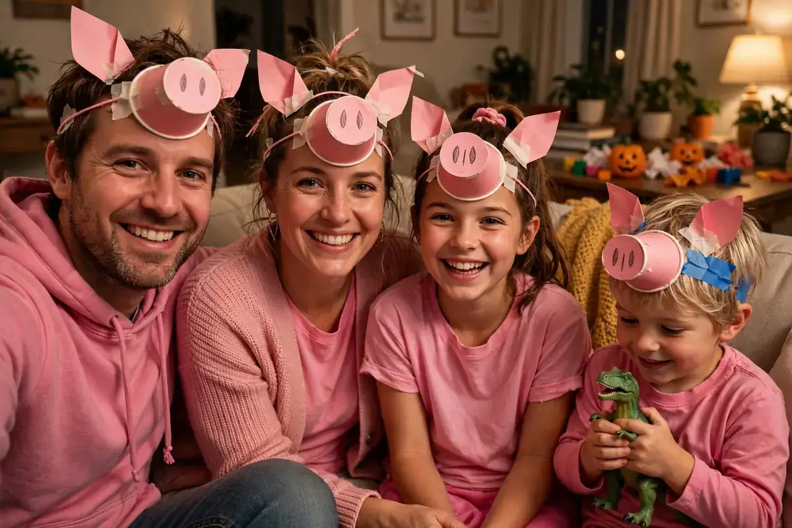
Little Pig Family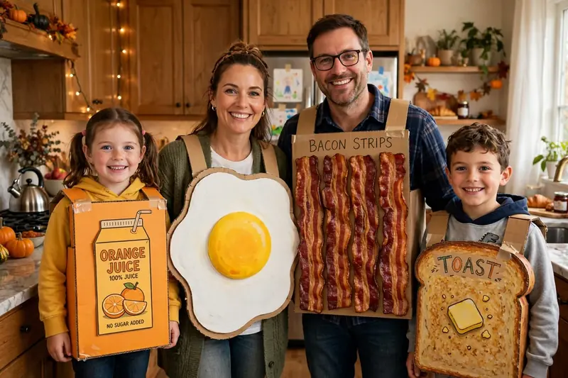
Breakfast BuffetNew costumes
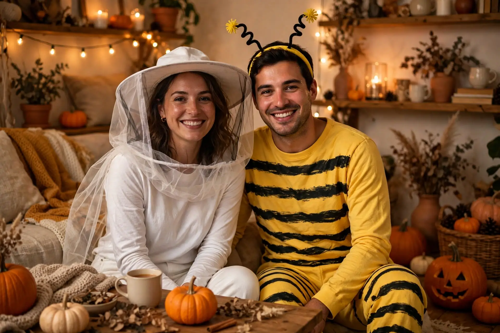
Beekeeper & Bee ✨ New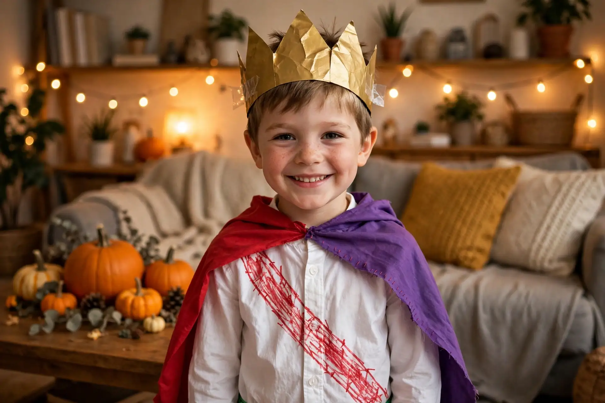
Little Prince ✨ New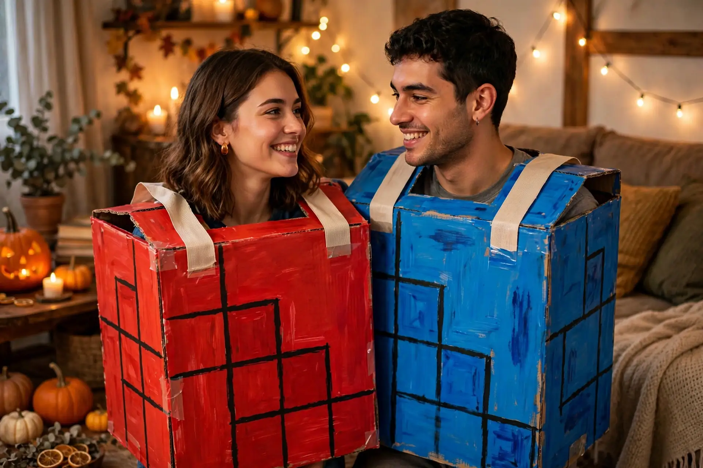
Block Party Duo ✨ New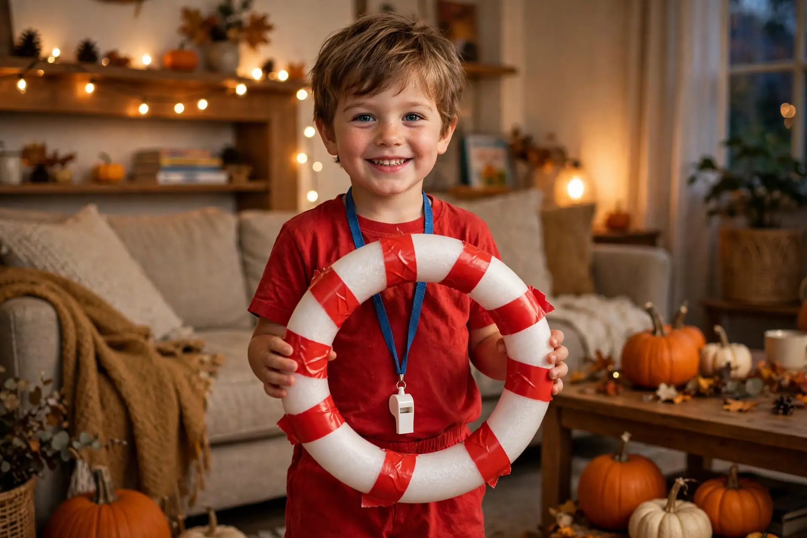
Little Lifeguard ✨ New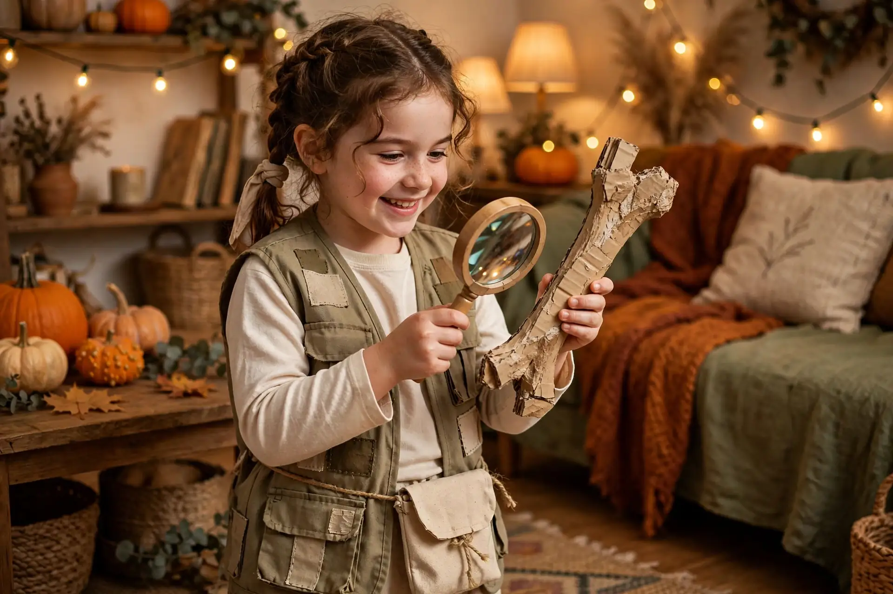
Fossil HunterOwn last year’s costume? Tick the parts you already own and we rank all 169 ideas by what you can reuse.
Need a handout? One-page printables for teachers, waiting rooms, libraries, and party hosts.
Wander all 169 ideas as a galaxy map, then tap any costume for the plan.
Buy day, build day, dress-up day: a simple plan for your Halloween.
Dealing out group roles? Deal them fairly.
👕 What materials or clothes are already in your house?
Tick what you own: cardboard, old sheets, face paint, last year’s costume. We rank all 169 ideas by what you can build tonight.
Good questions
Take the 2-minute quiz: 5 quick questions, one pick matched to your vibe and timeline. Every pick comes with a free DIY build guide that shows the build time and full supplies list up front.
The Make Tonight list is purely time-based: 30 minutes or less of hands-on work, two hours or less including drying. 126 of the 169 guides qualify. Separately, the Pantry page lets you tick off what you already own and ranks costumes by how many materials you are missing.
Take the quiz as a couple. Every build guide lists what you need before you start, and the ideas are designed around thrift-store and closet basics.
Yes. Take the quiz for your kid to get age-appropriate picks, and every guide includes safety notes for little ones.
Yes. No account, no ads, no checkout. It is a hobby project, free forever.
Yes. Add Pick My Costume to Claude and ask for costume ideas right in your chat.
No account, no signup. Your quiz answers stay on your phone, and we only track anonymous usage stats.